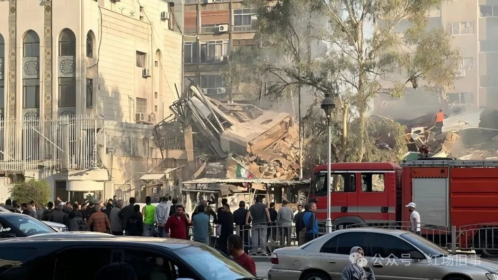
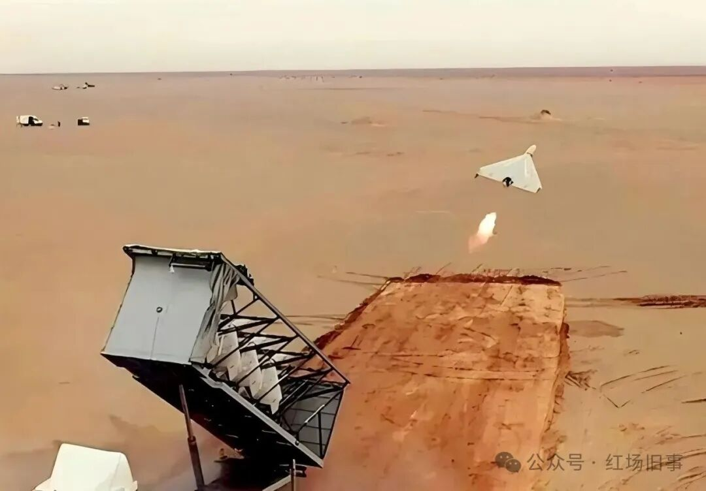
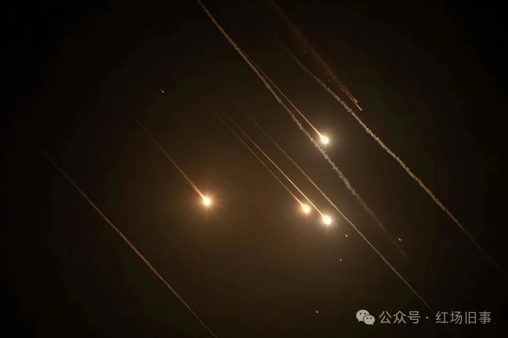
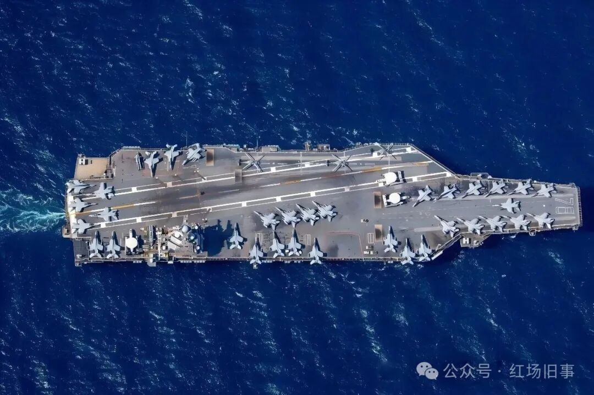

2024年4月1日下午，大马士革城区响起两声爆炸。城西迈宰居民区内一栋多层建筑整体垮塌，废墟上浓烟滚滚。受袭建筑紧邻伊朗驻叙利亚大使馆，废墟中清晰可见的伊朗国旗。伊朗驻叙大使侯赛因·阿克巴里赶到现场证实，遭袭的是伊朗使馆领事部门建筑，他的官邸就在顶层。以军F-35战机从戈兰高地方向发射了6枚导弹。

至少5人在袭击中死亡，包括伊朗伊斯兰革命卫队“圣城旅”高级指挥官穆罕默德·礼萨·扎赫迪及其副手。伊朗大使强烈谴责，称此次袭击“不会没有回应”。
一、红线如何被突破
几十年来，伊朗和以色列遵守一条红线——不直接攻击对方领土。伊朗通过真主党、哈马斯等代理人对抗以色列，以色列在叙利亚境内空袭伊朗目标、在伊朗本土暗杀核科学家。但攻击外国使馆，在国际法层面可被视为攻击该国领土。伊朗最高领袖哈梅内伊几十年来奉行“战略忍耐”，通过避免交战来消耗对手。然而当外交馆舍被炸、高级将领身亡，德黑兰无法再躲在代理人身后。伊朗总统莱希后来证实，4月13日“翻开了新篇章”。伊朗总统办公室副主任贾姆希迪警告：“现在形势已经改变。任何攻击伊朗国民或其利益的人都将受到直接惩罚。”他明确说，“战略忍耐”时代已经结束。
二、“真实承诺”行动：从本土射向以色列
4月13日晚，伊朗西部军事基地发射约170架“见证者-136”无人机、30枚巡航导弹和120枚弹道导弹，代号“真实承诺”。战术设计很清晰：无人机和巡航导弹增加以色列防空网压力，为弹道导弹创造机会。飞往特拉维夫和耶路撒冷的无人机还负责掩盖真实目标——内盖夫沙漠中的内瓦蒂姆空军基地。伊朗情报认定，那里正是4月1日空袭伊朗领事馆的战机起飞的地方。

伊朗此次展示了“法赫德”高超音速导弹。军事专家指出，这款导弹突防能力远超普通弹道导弹，这也是以色列“箭2”和“箭3”拦截效率较低的原因。拦截数据各方说法不一。以军方称99%被拦截，仅内瓦蒂姆基地遭到轻微破坏，伊朗称约90%成功命中目标。美国智库“战争研究所”指出，即使情报透明对抗中，仍有伊朗导弹命中目标。
三、为何打破战略耐心
伊朗选择直接报复，背后有三重算计。恢复威慑力：多年来以色列在叙利亚频繁空袭伊朗目标、暗杀核科学家，伊朗始终“冷处理”。但攻击外交馆舍、炸死高级将领触及底线。伊朗需要证明“抵抗轴心”领袖不是纸老虎，否则在真主党、胡塞武装等代理人面前威信扫地。精心计算的透明突袭：这不是真正的突袭，伊朗在袭击前72小时已“通知邻国”。美国官员在11日明确告知以色列：伊朗会在12日或13日发动袭击，规模是“100多架无人机和数十枚导弹”。美国国务院发言人米勒承认，美国与包括伊朗在内的各方进行了多次对话。伊朗意图不是制造大规模伤亡，而是完成政治宣示：德黑兰有能力、有决心直接打击以色列本土。

加沙战争的外溢效应：本轮巴以冲突爆发后，以色列对叙利亚境内目标的袭击更频繁，发生在白天、针对人员密集区的袭击激增。伊朗认为，再不出手，以色列将更加肆无忌惮。伊朗武装部队总参谋长巴盖里警告，伊朗有能力发动强度数十倍于此的袭击。
四、大国的站队
袭击后，拜登立即与内塔尼亚胡通话，明确表示美国不会参与针对伊朗袭击的军事反击，也不支持以色列采取军事报复。两艘在地中海东部的美国驱逐舰拦截了数十架无人机和至少3枚弹道导弹。美英在中东的陆基防空力量也参与拦截，法国海军提供雷达支持。约旦军方击落了进入其领空的无人机。俄罗斯保持沉默，自乌克兰战争以来，莫斯科与德黑兰军事合作更紧密，但在此次危机中，俄罗斯不愿因公开支持伊朗而恶化与以色列的关系。
下期预告
2026年2月28日，以色列发动“狮吼行动”，联合美军对德黑兰总统府附近区域及核设施发动大规模空袭。美国同步启动“史诗怒火”行动，“福特”号航母战斗群提供支援。

下一集《2026：“狮吼”与“史诗怒火”——美以对伊朗的终极对决？》，当美以联手“极限施压”，俄罗斯能提供多大程度的保护？中东是否会滑向一场全面战争？第14期 美国史上级别最高的CIA内鬼：哈罗德·尼科尔森第12期 FBI历史上最大的灾难：20年、6000页绝密文件，克格勃的顶级鼹鼠——汉森
文字与图片版权归各自权利人所有；排版根据抓取内容整理。